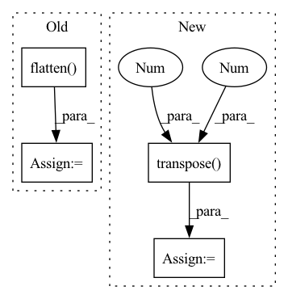

Pattern ID :17473

Before Change
// prepare input for decoder
for idx in range(len(srcs)):
srcs[idx] = srcs[idx].flatten(2).transpose(1, 2)
pos[idx] = pos[idx].flatten(2).transpose(1, 2)
bs, _, c = srcs[0].shape
After Change
// prepare input for decoder
src = src.flatten(2).transpose(1, 2)
pos = pos.flatten(2).transpose(1, 2)
bs, _, c = src.shape
query_embed, tgt = torch.split(query_embed, c, dim=1) // Tgt in contrast to detr not zeros, but learnable
query_embed = query_embed.unsqueeze(0).expand(bs, -1, -1)
In pattern: SUPERPATTERN
Frequency: 3
Non-data size: 4
Instances
Fragment ID: 57927379
Project Name: bwittmann/transoar
Commit Name: 93490790c06b3fe20dfd1eae015b8d79f8fd627a
Time: 2022-05-25
Author: bastian.wittmann@tum.de
File Name: transoar/models/necks/focused_decoder.py
M Class Name: FocusedDecoder
N Class Name: FocusedDecoder
M Method Name: forward(4)
N Method Name: forward(4)
M Parent Class: nn.Module
N Parent Class: nn.Module
M File Name: transoar/models/necks/focused_decoder.py
N File Name: transoar/models/necks/focused_decoder.py
M Start Line: 105
M End Line: 109
N Start Line: 55
N End Line: 58
'>
Before Change
def loss_class(self, outputs, soft_labels):
assert "pred_logits" in outputs
cls_preds = outputs["pred_logits"].flatten()
cls_labels = soft_labels.flatten()
// Remove non existent classes
valid_ids = (cls_labels != -1).nonzero()
After Change
dtype=torch.int64, device=src_logits.device)
target_classes[idx] = target_classes_o
loss_ce = F.cross_entropy(src_logits.transpose(1, 2), target_classes, self.cls_weights.to(device=src_logits.device))
return loss_ce
'>
Fragment ID: 57927377
Project Name: bwittmann/transoar
Commit Name: 968e31194fced5e1134b6dda145a63d38d9b6236
Time: 2022-03-09
Author: bastian.wittmann@tum.de
File Name: transoar/models/criterion.py
M Class Name: TransoarCriterion
N Class Name: TransoarCriterion
M Method Name: loss_class(4)
N Method Name: loss_class(3)
M Parent Class: nn.Module
N Parent Class: nn.Module
M File Name: transoar/models/criterion.py
N File Name: transoar/models/criterion.py
M Start Line: 32
M End Line: 38
N Start Line: 40
N End Line: 54
'>
Before Change
assert query_embed is not None
// prepare input for decoder
src_flatten = srcs.flatten(2).transpose(1, 2) // [Batch, Patches, HiddenDim]
pos_embed_flatten = pos_embeds.flatten(2).transpose(1, 2) // [Batch, Patches, HiddenDim]
bs, _, c = src_flatten.shape
After Change
// prepare input for decoder
for idx in range(len(srcs)):
srcs[idx] = srcs[idx].flatten(2).transpose(1, 2)
pos[idx] = pos[idx].flatten(2).transpose(1, 2)
bs, _, c = srcs[0].shape
query_embed, tgt = torch.split(query_embed, c, dim=1) // Tgt in contrast to detr not zeros, but learnable
query_embed = query_embed.unsqueeze(0).expand(bs, -1, -1)
'>
Fragment ID: 57927376
Project Name: bwittmann/transoar
Commit Name: b13e8b2db58100e624031db6b1f256e65dd68a87
Time: 2022-05-07
Author: bastian.wittmann@tum.de
File Name: transoar/models/necks/focused_decoder.py
M Class Name: FocusedDecoder
N Class Name: FocusedDecoder
M Method Name: forward(4)
N Method Name: forward(4)
M Parent Class: nn.Module
N Parent Class: nn.Module
M File Name: transoar/models/necks/focused_decoder.py
N File Name: transoar/models/necks/focused_decoder.py
M Start Line: 105
M End Line: 108
N Start Line: 105
N End Line: 109